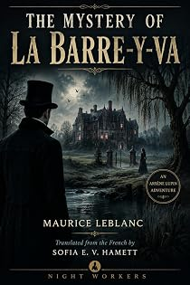

La Barre-y-va
A novel of Arsène Lupin
by Maurice Leblanc · translated by Sofia E. V. Hamettpar Maurice Leblanc · traduit par Sofia E. V. Hamett
The bookLe livre
Raoul d'Avenac comes home from the theatre, stops in front of his hall mirror and considers with some pleasure the waist held by a good tailor's coat, the width of the shoulders, the chest under the starched shirtfront. He is pleased with himself, which is always the moment Leblanc chooses to send someone through the door. A Normandy estate, a river that runs backwards, and a treasure.
Raoul d'Avenac rentre du théâtre, s'arrête devant le miroir de son entrée et considère avec un certain plaisir la taille que tient si bien un habit de bon faiseur, la largeur des épaules, la poitrine sous le plastron empesé. Il est content de lui, et c'est toujours le moment que choisit Leblanc pour faire entrer quelqu'un. Un domaine normand, une rivière qui remonte, et un trésor.
From the opening pagesLes premières pages
After an evening at the theatre, Raoul d'Avenac came home, stopped a moment in front of the mirror in his hall, and considered, with a certain pleasure, the waist held so well by a coat from a good tailor, the elegance of his outline, the width of his shoulders, the power of the chest swelling under the starched shirtfront.
The hall was small, and arranged with care, and it announced one of those comfortable bachelor flats, luxuriously furnished, where only a man of taste can live — a man in the habit of satisfying his most expensive whims, and with the means to do it. Raoul was looking forward, as he did every night, to smoking a cigarette in his study and dropping into the hollow of a deep leather armchair for one of those rests he called the aperitif of sleep. His mind shed every troublesome thought there and drifted off into a vague reverie, through which slid the memories of the day just dead and the blurred plans for tomorrow.
About to open the door, he hesitated. Only then, and all at once, did it strike him that he had not switched on the hall light himself. The three bulbs of the ceiling fitting had been spilling out their triple glare when he walked in.
"Odd," he said to himself. "Nobody can have come here since I left — the servants had the evening off. Am I supposed to believe I went out earlier without turning the lights off behind me?"
D'Avenac was a man who missed nothing, but who never wasted his time hunting for the answer to those small problems chance sets us, problems circumstance almost always undertakes to explain in the most natural way in the world.
"We manufacture our own mysteries," he liked to say. "Life is a great deal less complicated than people think, and it unpicks by itself whatever looks tangled to us."
And in fact, when he had gone through the door in front of him, he was not unduly surprised to see, at the far end of the room, a young woman standing with her back against a small round table.
"Good Lord," he exclaimed. "A charming apparition."
Like the hall, the charming apparition had switched on every bulb in the room; she clearly preferred full light. So he was able to admire, at his leisure, a pretty face framed in blonde curls, and a body that was slim, well proportioned, quite tall, and dressed in a frock cut a little behind the fashion. Her eyes were anxious. Her face was tight with feeling.
Raoul d'Avenac did not lack a good opinion of himself; women had always been generous with their favours. He assumed, then, that a piece of luck had walked in, and accepted the adventure as he had accepted so many others he had never asked for.
"I don't know you, madam, do I?" he said, smiling. "I've never seen you before?"
She made a gesture meaning that he was not mistaken. He went on.
"How the devil did you get in here?"
She held up a key, and he exclaimed.
"You actually have a key to my flat. This is becoming genuinely entertaining."
He was more and more convinced that he had made a conquest of his beautiful visitor without knowing it, and that she had come to him like easy prey, hungry for rare sensations and perfectly ready to be won.
So he moved towards her with the confidence he always brought to such occasions, determined not to let slip an opportunity that had arrived in so charming a shape. But against all expectation the young woman flinched back and stiffened her arms in front of her, frightened.
"Don't come near me! I forbid you to come any closer. You have no right—"
Her face took on an expression of terror that threw him. Then, almost in the same breath, she began to laugh and to cry, shaking, in such distress that he said gently.
"Please, calm down. I'm not going to do you any harm. You didn't come here to burgle me, did you? Or to shoot me? Then why would I hurt you? Come on, answer me. What do you want from me?"
Trying to master herself, she murmured.
"To ask you for help."
"Helping people isn't my trade."
"It seems that it is. And that whatever you attempt, you bring off."
"Well, now. That's a pleasant privilege you're granting me. And if I attempt to take you in my arms, shall I bring that off too? Think of it — a lady, at one in the morning, in a gentleman's flat, and as pretty as you are. As attractive. Admit that a man could imagine, without being especially vain about it—"
He came closer again, and she did not protest. He took her hand and held it between his own. Then he stroked her wrist and her bare forearm, and had the sudden sense that if he drew her against him she might not push him away, so weak had feeling left her.
Slightly intoxicated, he tried it, very discreetly, slipping his hand behind the young woman's waist. But at that moment he looked at her properly, and saw eyes so wild and a face so wretched, so full of distress and appeal, that he broke off the gesture and said.
"I beg your pardon, madam."
She said, in a low voice.
"No. Not madam. Miss."
And she went straight on.
"Yes, I know — a call like this, at such an hour. It was natural that you should misunderstand."
"Oh, completely misunderstand," he said, joking. "After midnight my ideas about women turn upside down, and I start imagining absurd things and behaving without the slightest delicacy. Forgive me again. I was wrong. Is it over? You're not angry with me any more?"
"No," she said.
He sighed.
"God, you're delightful. And what a pity you came for a reason other than the one I had in mind. So you've come to see me the way all those people used to come and consult Sherlock Holmes at his home in Baker Street? Then talk, miss, and give me every explanation I need. My loyalty is yours. I'm listening."
He sat her down. Reassured as she was by Raoul's good humour and his respectful kindness, she stayed very pale. Her lips were gracefully drawn, fresh as a child's, and they tightened from time to time. But there was trust in her eyes.
"Forgive me," she said, in an altered voice. "I may not be entirely in my right mind. And yet I know exactly how things stand. I know there are things that can't be understood, and others still to come that frighten me. Yes, they frighten me in advance, and I couldn't tell you why, because after all there's nothing to prove they'll happen. God. God. How frightening it is, and how much it hurts."
She passed a hand over her forehead, a weary gesture, as if to drive off thoughts that were wearing her out. Raoul genuinely pitied her confusion, and laughed to settle her.
"How nervous you look. You mustn't be. It gets you nowhere. Come along, courage, miss. There's nothing left to fear now, not even from me, from the moment somebody asks me for help. You've come up from the country, haven't you?"
The excerpt ends here — about 1,234 words of the published edition.L'extrait s'arrête ici — environ 1,234 mots de l’édition parue.
KindlePaperbackBrochéContextContexte
Everyone in English knows The Hollow Needle and 813. Almost nobody has read Barnett & Co., The Mélamare House, La Barre-y-va or The Girl with the Green Eyes — the later Lupin books that never entered the English canon, or entered it once and fell out. There is a symmetry the house enjoys here: Leblanc built Lupin out of newspaper reports on Alexandre Marius Jacob, whose memoirs gave Night Workers its name.
Tout le monde connaît en anglais L'Aiguille creuse et 813. Presque personne n'a lu L'Agence Barnett et Cie, La Demeure mystérieuse, La Barre-y-va ou La Demoiselle aux yeux verts — les Lupin tardifs qui ne sont jamais entrés dans le canon anglais, ou qui en sont sortis. Il y a là une symétrie qui plaît à la maison : Leblanc a bâti Lupin à partir des comptes rendus de presse sur Alexandre Marius Jacob, dont les mémoires ont donné son nom à Night Workers.
The whole programmeTout le programme